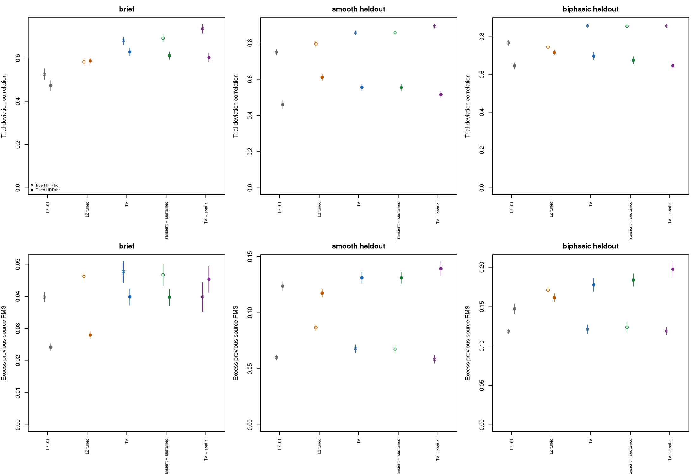
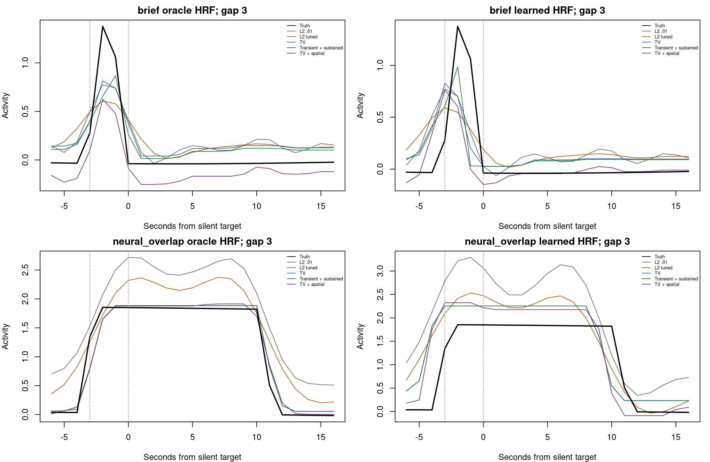
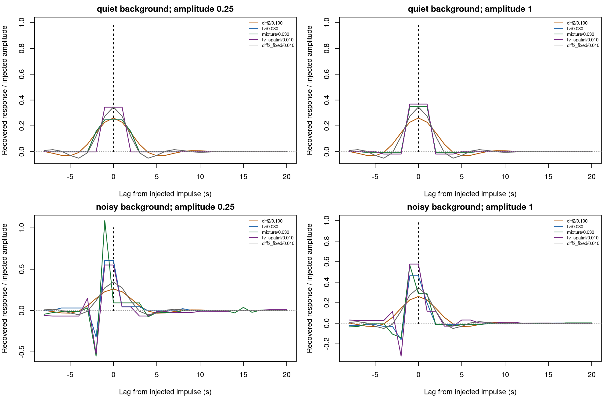
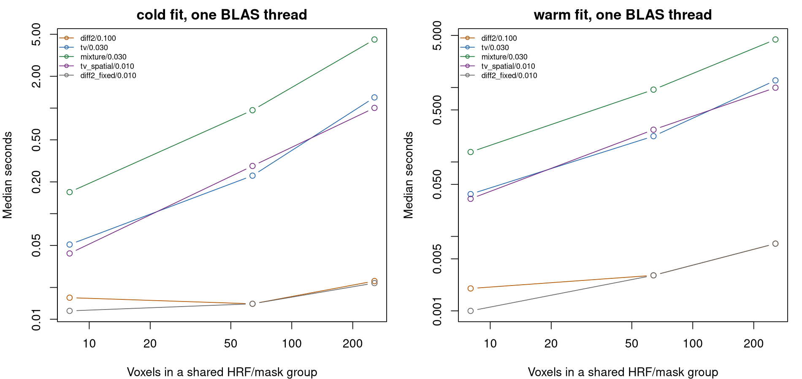

Continuous neural waveform recovery and event leakage
Source:WAVEFORM_RECOVERY_VALIDATION.md
This study evaluates the output needed for event-aligned analyses: a continuous neural activity estimate that retains differences between individual trials. It compares temporal priors before adding a new production deconvolution API. The implementation is an optimized, validation-only Rcpp prototype. Existing package defaults, event alignment, truncation, and censoring policies are unchanged.
Results and implications
All 160 evaluation datasets / 480 runs / 1,600 method-arm comparisons completed and passed frozen-source, seed, completeness, and diagnostic-record checks. The practical conclusion is to retain the fast quadratic method while improving and validating HRF/noise estimation and waveform-oriented tuning. These results do not support automatically replacing it with an iterative sparse prior in the current fitted-HRF pipeline.
The new priors can improve individual-trial recovery when HRF/noise parameters are known. For held-out smooth waveforms:
| Method | Neural r, true HRF/rho | Neural r, fitted HRF/rho | Trial-deviation r, true HRF/rho | Trial-deviation r, fitted HRF/rho |
|---|---|---|---|---|
| Quadratic, lambda .01 reference | .779 | .507 | .750 | .460 |
| Quadratic, development-selected .1 | .815 | .621 | .796 | .610 |
| TV | .847 | .572 | .855 | .554 |
| Transient plus sustained | .849 | .571 | .856 | .554 |
| TV plus spatial | .889 | .541 | .893 | .515 |
Trial-deviation correlation measures differences between individual trials after removing the average waveform at each lag. Thus the oracle gains do include preservation of trial variability, rather than only recovery of a common response.
Relative to the tuned quadratic comparator, the mixture reduces continuous neural NMSE by .0552 in the true-HRF/rho smooth case (paired Monte Carlo 95% interval: -.0664 to -.0441) and increases trial-deviation r by .0603 (.0512 to .0695). In the fitted-HRF/rho arm it instead increases NMSE by .1333 (.1208 to .1458) and reduces trial-deviation r by .0566 (-.0653 to -.0478). All fits in this smooth case converged.
The spatial candidate has the lowest mean continuous NMSE in all eight oracle scenarios; tuned quadratic has the lowest mean continuous NMSE in all eight fitted scenarios. Those are rankings of means, not claims of significant differences in every case or superiority on every metric. For example, fitted TV preserves brief-trial deviations better than tuned quadratic (.628 versus .587), despite slightly worse continuous NMSE (.757 versus .737).
Better waveform recovery does not guarantee less preceding-source carryover. In the smooth case, target-window excess from preceding responses is .0867 for tuned quadratic and .0678 for TV with true HRF/rho. With fitted HRF/rho these become .1175 and .1310. Values are RMS fractions of each voxel’s largest true preceding response. The weakly penalized .01 reference can have lower excess while recovering the overall signal less accurately. Read leakage and amplitude error together, rather than selecting the smallest leakage number alone.

Open markers use true HRF/rho; solid markers use fitted HRF/rho. Error bars are Monte Carlo intervals over independent datasets, not uncertainty on a trial.
The fitted observation model is a major limitation in these simulations. The true noise rho is .5. Mean estimated rho is .812 for smooth waveforms, .879 for biphasic responses, and .900 for sustained neural overlap. Mean HRF kernel NMSE in those cases is .247, .090, and .132 respectively. These findings are consistent with unmodeled neural waveform structure entering the noise/HRF fit, but the combined fitted arm cannot identify how much loss each component causes. HRF fallback rates are also retained; they range from 2.1% in sustained overlap to 37.1% in spatial heterogeneity. This is not evidence against all HRF estimation strategies.
Genuine neural overlap must survive reconstruction. In that scenario, the true preceding contribution during target lags 0–3 has mean RMS .842 of its peak. Oracle TV recovers .834, rather than forcing it toward zero. Its excess error is measured relative to that real ongoing activity. The examples below are the prespecified first replicate and first voxel, not selected examples.

There are 37 iteration-limit voxel fits among 76,800: one oracle block-TV fit, 20 oracle overlap-TV fits, and 16 oracle overlap-mixture fits. These affect 13 of 20 overlap datasets for TV and 12 for the mixture, so the small global failure fraction must not hide the concentration in this stress case. Strict convergence-only overlap comparisons retain only 7 and 8 datasets, respectively; the numerical limitation matters for deployment. The remaining fits, including all fitted-HRF/rho fits, converged. Primary results retain all datasets and expose these flags; convergence-only comparisons are supplementary.
The next production-oriented steps supported by this study are:
- Isolate HRF and covariance errors: cross true/fitted HRF with true/fitted rho, then test a training mean model that can represent variable-duration neural activity. Independent HRF calibration or explicit physiological shape constraints should also be tested. Avoid changing both and attributing a gain or loss to HRF fitting alone.
- Keep waveform and trial-variation diagnostics in tuning decisions. Stronger quadratic regularization materially improves this study’s waveform loss, but its truth-based lambda selection does not transfer automatically to participant data. A BOLD prediction score alone is not validation of recovered neural timing.
- Keep TV/spatial candidates experimental until the fitted-model gap and speed cost are addressed. The activity-prior comparison uses different selected temporal lambdas (.01 spatial versus .03 nonspatial). Its gains cannot be attributed exclusively to spatial borrowing without a matched-lambda ablation. The opposite-sign scenario does not collapse here, but it does not establish that general spatial smoothing is harmless.
- Optimize the solver structure before whole-brain adoption. The current native dense updates already batch signals and reuse factors, yet remain much slower than quadratic inversion. Banded convolution/penalty solves with low-rank nuisance adjustments, followed by verified stopping-parameter tuning, are more useful next targets than simply adding more workers.
The fixed .01 comparator is the preceding studies’ reference, not a universal package lambda default. No new automatic gain correction, event attribution, truncation threshold, or censoring recommendation follows from this experiment.
What is estimated
All methods reconstruct the entire acquisition before extracting any epochs. Neither event onsets nor RPE values enter the neural solver. Each time point has its own latent activity value; no event-type mean response is fitted. Events enter only the cross-run HRF estimator and the subsequent simulation scoring. The HRF estimator has free amplitudes for individual events, with no RPE regressor.
There are two distinct outputs one could want:
- Activity present around an event. This continuous reconstruction includes activity that genuinely persists from an earlier event, as a neural recording would. This study evaluates this output.
- Activity exclusively attributable to that event. Separate flexible trial waveforms can exchange activity wherever their supports overlap without changing the summed neural signal or BOLD. This study includes an explicit nonidentifiability test. It does not claim to identify that decomposition.
The target is slow population activity, not the voltage waveform or frequency content of an LFP. TR remains one second throughout; no upsampling is used to claim finer temporal resolution.
Candidates and shared observation model
Let A be the finite HRF convolution after selecting usable acquisition rows, gap-aware AR(1) whitening, and projection of an intercept and linear drift. Y is standardized BOLD after the same transformation. All candidates include 32 pre-run latent samples and the same small numerical ridge (1e-8). There are no artificial post-run observations.
| Method | Objective, omitting the shared numerical ridge |
|---|---|
| Fixed quadratic reference | 0.5 ||A X - Y||² + 0.5 * .01 ||D2 X||² |
| Tuned quadratic | Same objective, development-selected lambda |
| TV | 0.5 ||A X - Y||² + lambda ||D1 X||1 |
| Transient plus sustained |
X = U + V; 0.5 ||A(U+V)-Y||² + lambda (||U||1 + ||D1 V||1)
|
| TV plus spatial | TV objective plus 0.5 * .01 * trace(X L X')
|
TV favors sparse changes rather than smooth curvature. The mixture can place brief activity in U and sustained activity in V. Both components are signed; their decomposition itself is not a physiological identification. Only their sum is evaluated as the recovered neural series. This is a candidate model inspired by sparse deconvolution, not a reimplementation of Total Activation.
For the spatial candidate, L = I - 11'/m within a supplied parcel and identical HRF/noise group. It shrinks activity toward the parcel mean in standardized units. It does not enforce equal waveforms. Parcel membership is supplied before seeing activity; opposite signs are never regrouped to help the prior. The heterogeneity scenario deliberately violates the assumption of coherent signs. The spatial strength is a single fixed test value, not a search over spatial priors. This is a prior on neural activity, distinct from the existing HRF-shape regularization. The latter is held fixed across the learned-HRF comparisons.
BOLD standardization uses each voxel’s SD on usable observations. Recovered activity is multiplied by that SD to restore input units. This makes the L1 penalties insensitive to an arbitrary change of BOLD units. For each paired counterfactual, the observed dataset’s SD is frozen so changes in normalization cannot masquerade as temporal leakage. Native factors are shared across signals with the same HRF, mask, and covariance.
Simulation and separation of tuning from evaluation
The independent forward generator evaluates neural waveforms and gamma-density HRFs on a 0.1-second grid, numerically convolves them using an FFT, and samples BOLD at one-second intervals. It does not call package HRF, event-design, or convolution routines. The inverse operates only on the acquisition grid. The small discrepancy between continuous forward generation and sampled HRF kernels is retained, including in the oracle-HRF reference.
Each dataset contains three independent 256-volume runs and eight voxels in two supplied parcels. The positive-gamma HRF shape parameters are 5 and 7 in the ordinary cases (positive peaks approximately 4 and 6 seconds). Each run has five pairs of events. A large preceding response is followed after 3, 6, or 10 seconds by a target; three of the five targets are genuinely null. The gaps rotate across runs. Active targets have an RPE effect and additional trial-specific amplitude variation. Latencies, durations, and amplitudes vary across trials and voxels. A low-amplitude continuous background and an unmarked event are included in neural truth. Measurement noise is AR(1), with marginal SD .04, rho .5, and shared plus voxel-specific components.
| Scenario | Purpose |
|---|---|
| Brief blocks | Large short response followed by a silent target; also used for development |
| Longer blocks | Sustained responses; also used for development |
| Smooth, held out | Compact smooth pulses with varying widths and latencies |
| Biphasic, held out | Positive and negative lobes; tests shape and sign assumptions |
| Neural overlap | Preceding activity truly lasts 11–14 seconds; it must be retained |
| HRF mismatch | Smooth neural pulses, gamma shape parameters 4.3/8.3 absent from the fitted grid |
| Censored, held out | Several missing blocks on the original clock |
| Spatial heterogeneity | Opposite response signs within the supplied parcels |
Development uses four independent datasets in each of the first two scenarios. Each temporal method searches four lambdas: .001, .01, .1, 1 for quadratic; .003, .01, .03, .1 for TV and the mixture. A candidate must converge for every voxel in both the observed and paired counterfactual fits to be eligible. Selection minimizes mean continuous neural NMSE over development datasets. The existing quadratic lambda .01 is kept as a separate reference.
Evaluation uses 20 fresh datasets per scenario, including entirely held-out waveform families. Settings are frozen before generating evaluation data. Development seeds are 24000000 + scenario_index*10000 + replicate; evaluation seeds use 26000000 instead. The full study has 160 independent evaluation datasets and 480 runs. Voxels, trials, and runs are not treated as independent replicates for Monte Carlo intervals. Development tuning uses known simulated neural truth. It is not a new tuning procedure available for participant data, and the selected lambdas should not be interpreted as universal recommended settings.
Each evaluation is performed twice:
- Oracle HRF and rho: isolates neural reconstruction from HRF/noise estimation.
- Cross-run estimated HRF and rho: uses the existing package estimator; each run’s HRF selection uses the other two runs. The supplied events are modeled as impulses with free trial amplitudes. The estimator is not supplied the true neural durations or shapes. Its resulting shape/latency ambiguity is deliberately part of this more difficult evaluation.
The tuning chosen in the oracle-HRF development arm is retained in both arms. This is a controlled transfer test, not an optimally tuned learned-HRF pipeline. The learned arm changes both HRF shape and noise covariance. A performance gap against the oracle therefore cannot be attributed solely to HRF estimation. Its impulse-based HRF training model is intentionally challenged by sustained neural truth; a poor result would not establish that all HRF estimation fails. Kernel error, estimated rho, rho error, and fallback rates are retained to help identify what needs a subsequent controlled comparison.
Waveform and leakage diagnostics
Scores use the interior of each run, excluding the first 32 and last 33 samples. Censored observations remain at their original positions and are omitted from scoring. A predicted latent sample in a gap is not an observation. Epochs span -2 through +14 seconds from the target, using linear interpolation for fractional onsets. Scoring an interpolated point conservatively requires both bracketing acquisition rows to be usable. No trial is discarded simply because it overlaps.
Because nuisance projection removes information about the neural DC level, evaluation aligns one constant offset per voxel using its interior truth. This is an explicitly oracle evaluation adjustment, never an available user operation. It does not align latency, rescale amplitudes, or adjust individual trials. Unaligned continuous NMSE is retained alongside the adjusted measure. An absolute physiological neural baseline remains unidentified.
Measures include:
- Continuous neural correlation and NMSE.
- Correlation and NMSE of each actual event-aligned waveform.
- Correlation and NMSE of trial departures from the average waveform: subtract the across-trial mean separately at each lag before comparing estimates and truth.
- Absolute errors in peak magnitude, signed area, peak latency, and effective width (
sum(abs(activity))/max(abs(activity))). These describe the continuous activity in the epoch, which can include multiple events; they are not estimates of an isolated target’s physiological duration. Censored epochs use their common retained bins. - Error in null-target windows and paired preceding-source leakage by spacing.
The leakage test reconstructs two signals with identical target responses, background, measurement noise, and censoring. In the second signal, all preceding-event responses are removed. The HRF, rho, and BOLD scaling remain frozen from the original data. If F is reconstruction, the diagnostic is:
estimated preceding contribution = F(Y) - F(Y_without_previous)
excess = estimated preceding contribution - true preceding neural activityExcess RMS is scored during target lags 0–3 and divided by the voxel’s largest true preceding-response magnitude. In the short-response case, true activity from the preceding event has ended, so this measures spurious carryover. In the neural-overlap case, the correct preceding contribution is nonzero: removing it would be an error. True and recovered preceding activity are both reported. Null-target error also measures the absolute reconstruction error around silent targets, including background recovery and noise.
These paired differences are conditional on context and on removing the entire set of preceding responses. For nonlinear penalties, they are not additive single-event contributions or an invertible linear resolution matrix.
An additional perturbation experiment injects a single neural impulse at each of nine source lags and measures the full recovered time course. It repeats this for amplitudes .25 and 1 in quiet and noisy backgrounds, holding scaling fixed. The saved maps show temporal spreading and context/amplitude dependence; they are not posterior uncertainty or evidence of sub-TR resolution. The spatial candidate has only one voxel in this experiment, so its Laplacian is zero; that curve tests its temporal lambda, not spatial borrowing.
All 180 perturbations converged with a probe-only cap of 60,000 iterations. The quiet-background TV and mixture probes needed substantially more iterations than the primary study’s 12,000 cap. This is a numerical stress result, not a reason to silently increase the primary evaluation’s iteration budget.

Sharper-looking responses are not necessarily accurate. These conditional maps can change shape with background noise and injected amplitude; negative lobes and shifted peaks can appear before the injected impulse. A gain correction at one lag cannot undo this full temporal behavior.
Numerical verification and speed
The prototype uses batched native ADMM with exact common quadratic updates. Both primal and dual residual criteria must pass for every voxel; iteration-limit failures remain explicit. The fixed ADMM rho is .01, the iteration limit is 12,000, absolute tolerance is 1e-6, and relative tolerance is 1e-5. The quadratic candidate is solved directly.
Preparation is cached across paired fits and penalty thresholds. Temporal differences and their adjoints are applied directly. Without spatial coupling, the solver uses a shared inverse application without voxel rotations. For the parcel Laplacian, the native implementation solves its shared mean and residual subspaces directly, avoiding repeated dense voxel rotations. A generic eigendecomposition fallback supports other positive-semidefinite inputs.
Tests compare native TV, mixture, and spatial solutions with an independent R implementation using explicit matrices and fresh linear solves. Other checks cover the package quadratic inverse, independent forward quadrature, causal alignment, acquisition-clock censoring, scale equivariance, convergence failure, true neural overlap, trial variation metrics, and nonidentifiable event decompositions. Collection checks reject missing/duplicate metrics, missing solver records, incorrect seeds, incompatible shards, and changes to frozen sources. The completed focused suite passed 86 cases / 1,147 assertions, with no failures, errors, warnings, or skips. It includes the existing cross-run HRF, quadratic deconvolution, voxel extraction/alignment, and earlier recovery studies.
The separate benchmark measures cold preparation plus fitting and cached fitting at 8, 64, and 256 voxels, with one HRF/mask group and one BLAS/OpenMP thread. Compilation is excluded. This remains a dense validation prototype, not a whole-brain implementation or a 50,000-voxel speed claim.
In the completed benchmark, all 90 fits converged. Median times at 256 voxels and 256 volumes on an AMD EPYC 7313, using one BLAS/OpenMP thread, were:
| Candidate | Cold fit, seconds | Cached fit, seconds |
|---|---|---|
| Quadratic, lambda .01 | 0.022 | 0.008 |
| Quadratic, lambda .1 | 0.023 | 0.008 |
| TV | 1.262 | 1.246 |
| Transient plus sustained | 4.464 | 4.412 |
| TV plus spatial | 1.004 | 0.994 |
The iterative priors remain much slower despite native batching and caching. These final timings were collected after the evaluation workers finished. Three repetitions on a shared 64-logical-CPU host still describe local timings, rather than isolated hardware throughput or a precise scaling law.

Limits of the comparison
The pairs intentionally isolate a large preceding response and silent or active target. They are separated by 40 seconds; this is not a dense realistic task schedule with cue, action, feedback, and many recent events. Only one TR, one measurement-noise level/covariance family, eight voxels, and fixed-within-voxel HRFs are tested. Longer neural responses also produce more BOLD signal, so differences between waveform families are not pure shape effects at matched SNR.
The lambda search is deliberately small. The mixture’s two L1 weights are equal; the spatial prior has one fixed strength. This does not exhaust sparse priors, mixture weights, signed L1 alone, higher-order TV, HRF models, or optimized iterative solvers. Bush/Cisler and nonlinear positivity-constrained methods are not re-evaluated here. No participant dataset, neural recording, physiological noise model, nonlinear vascular response, or changing HRF is included.
Primary accuracy summaries retain all prespecified datasets, including flagged iteration-limit fits. Separate paired comparisons restricted to datasets where both methods fully converged show the numerical sensitivity; their smaller sample sizes are explicit and they do not replace the primary results. Monte Carlo intervals describe mean performance across independent simulated datasets, not uncertainty on an individual’s trial waveform.
Low preceding-source leakage can also result from suppressing neural responses. It must be read alongside waveform/NMSE, trial-variation recovery, and amplitude errors. These simulations do not establish a universal safe inter-event interval or justify automatically truncating a fixed number of seconds from user data.
Reproduction and outputs
Use the package checkout containing the cross-run HRF/noise estimator. Set FMRI_VALIDATION_LIBRARY if that version is installed in a separate library. Run from the repository root with one BLAS/OpenMP thread:
export OPENBLAS_NUM_THREADS=1 OMP_NUM_THREADS=1
Rscript --vanilla inst/validation/run_waveform_recovery.R /tmp/wv-development development 4
Rscript --vanilla inst/validation/run_waveform_recovery.R /tmp/wv-evaluation evaluation 20 '' /tmp/wv-development/selection.rds
Rscript --vanilla inst/validation/report_waveform_recovery.R /tmp/wv-evaluation /tmp/wv-report
Rscript --vanilla inst/validation/diagnose_waveform_recovery.R probe /tmp/wv-development/selection.rds /tmp/wv-report
Rscript --vanilla inst/validation/diagnose_waveform_recovery.R benchmark /tmp/wv-development/selection.rds /tmp/wv-reportFor parallel scenario shards, replace the empty fourth argument with a comma-separated scenario list and use separate empty output directories. Keep the same selection file, seed scheme, and sources. Give the report their common parent directory. Independent R processes share the compiled solver cache but do not alter package installations. No existing output directory is overwritten by the simulation runner.
resume_waveform_recovery.R STOPPED_SHARD SCENARIO NEW_DIRECTORY [WORKERS] retains completed datasets and computes only missing seeds into a new directory. Stop the source process first. Its unchanged frozen protocol is verified by the final collector. Optional Linux fork workers generate exactly the same explicitly seeded datasets; serial and parallel recovery metrics, leakage, and solver diagnostics are tested for bitwise equality. Each worker uses one BLAS/OpenMP thread. Development shards can be combined and frozen with freeze_waveform_development() from the report script; both brief and block scenarios must be complete before evaluation begins.
inst/validation/waveform_results/ contains the frozen selection/development record, dataset metrics, Monte Carlo intervals, paired comparisons, spacing diagnostics, solver and HRF diagnostics, fixed-first-replicate examples, perturbation maps, runtime measurements, and provenance/checksums.
Methodological references: Total Activation motivates testing sparse temporal changes and spatial coherence; Boyd et al.’s ADMM paper provides the splitting and primal/dual stopping framework. Neither establishes that these candidate penalties recover contamination-free individual trials.